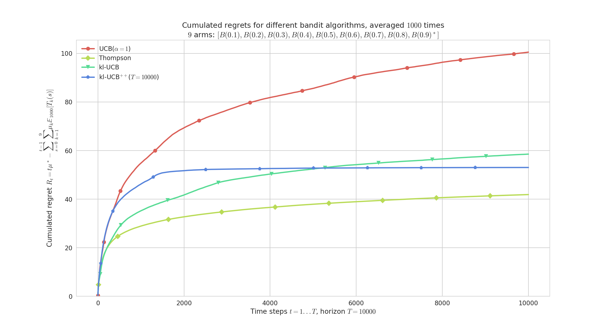

title: “SMPyBandits: an Experimental Framework for Single and Multi-Players Multi-Arms Bandits Algorithms in Python” fancyhdrtitle: SMPyBandits author-meta: Lilian Besson authors:
affiliation:¶
“1, 2”¶
affiliation: PhD Student at CentraleSupélec, campus of Rennes, SCEE team & Inria Lille Nord Europe, SequeL team. email: Lilian.Besson[AT]CentraleSupelec[.]fr affiliations:
- name: CentraleSupélec, campus of Rennes, SCEE team index: 1
- name: Inria Lille Nord Europe, SequeL team. index: 2 tags:
- name: Lilian Besson orcid: 0000-0003-2767-2563
- sequential learning
- multi-arm bandits
- multi-player multi-arm bandits
- aggregation of sequential learning algorithms
- learning theory date: 23 March 2018 bibliography: paper.bib bibtex: true natbib: false biblio-style: ieeetr link-citations: true colorlinks: true numbersections: yes section-titles: yes usehancyhdr: yes fontsize: 10pt geometry: scale=0.71 fontfamily: palatino
Summary¶
SMPyBandits is a package for numerical simulations on single-player and multi-players Multi-Armed Bandits (MAB) algorithms, written in Python (2 or 3). This library is the most complete open-source implementation of state-of-the-art algorithms tackling various kinds of sequential learning problems referred to as Multi-Armed Bandits. It aims at being extensive, simple to use and maintain, with a clean and well documented codebase. It allows fast prototyping of simulations and experiments, with an easy configuration system and command-line options to customize experiments.
Presentation¶
Single-Player MAB¶
Multi-Armed Bandit (MAB) problems are well-studied sequential decision making problems in which an agent repeatedly chooses an action (the “arm” of a one-armed bandit) in order to maximize some total reward [@Robbins52], [@LaiRobbins85]. Initial motivation for their study came from the modeling of clinical trials, as early as 1933 with the seminal work of Thompson [@Thompson33], where arms correspond to different treatments with unknown, random effect. Since then, MAB models have been proved useful for many more applications, that range from cognitive radio [@Jouini09] to online content optimization like news article recommendation [@Li10], online advertising [@LiChapelle11], A/B Testing [@Kaufmann14], [@Jamieson17], or portfolio optimization [@Sani12].
More formally, a stochastic MAB is defined by $K>1$ distributions $\nu_k$ (arms),
and i.i.d. rewards $r_k(t) \sim \nu_k, \forall t$.
An agent choose arm $A(t)\in{1,\dots,K}$ at time $t$ and observes the reward $r_{A(t)}(t)$ without knowing the other (hidden) rewards.
Her goal is to maximize $\sum_{t=1}^T r_{A(t)}(t)$ by sequentially exploring the $K$ arms,
and she essentially has to find and exploit the best one as fast as possible.
This library tackles one dimensional distributions,
and supports Bernoulli, binomial, Poisson, and a generic discrete distributions,
as well as exponential, gamma, Gaussian and uniform continuous distributions,
which can be truncated to an interval $[a,b]$ or have unbounded support ($\mathbb{R}$).
SMPyBandits is a complete open-source implementation of single-player (classical) bandit algorithms,
containing over 65 algorithms.
It uses a well-designed hierarchical structure and class inheritance scheme to minimize redundancy in the codebase.
For instance, most existing algorithms are index-based, and new ones can be written easily by inheriting from the IndexPolicy class.
An index-based algorithm computes an index $I_k(t)\in\mathbb{R}$ for each arm $k$ at time $t$ and simply play $A(t) = \arg\max_k I_k(t)$.
Multi-Players MAB¶
For Cognitive Radio and other applications, a well-studied extension is to consider $M\geq2$ players, interacting on the same $K$ arms. Whenever two or more players select the same arm at the same time, they all suffer from a collision.
Different collision models has been proposed, and the simplest one consists in giving a $0$ reward to each colliding players.
Without any centralized supervision or coordination between players, they must learn to access the $M$ best resources (i.e., arms with highest means) without collisions.
SMPyBandits implements all collision models found in the literature, as well as all the algorithms from the last 10 years (including rhoRand, MEGA, MusicalChair, and our state-of-the-art algorithms RandTopM and MCTopM from @BessonALT2018).
For comparison, realistic or full-knowledge centralized algorithms are also implemented.
Features¶
With this numerical framework, simulations can run on a single CPU or a multi-core machine using joblib [@joblib],
and summary plots are automatically saved as high-quality PNG, PDF and EPS, using matplotlib [@matplotlib] and seaborn [@seaborn].
Raw data from each simulation is also saved in a HDF5® file using h5py [@h5py], an efficient and compressed binary format, to allow easy post-mortem exploration of simulation results.
Making new simulations is very easy, one only needs to write a configuration script (configuration.py), without needing a complete knowledge of the internal code architecture.
A complete Sphinx documentation, for each algorithm and all parts of the codebase, even including the constants in the different configuration files, is available here: SMPyBandits.GitHub.io.
How to run experiments?¶
We show how to install SMPyBandits, and an example of how to run a simple experiment. This bash snippet [^docforconf] shows how to clone the code [^alsoonpypi], and install the requirements for Python 3 (once):
# 1. get the code in the folder you want
$ git clone https://GitHub.com/SMPyBandits/SMPyBandits.git
$ cd SMPyBandits.git
# 2. install the requirements
$ pip install -r requirements.txt
Launching simulations is easy, for instance this snippet shows how to start $N=1000$ repetitions of a simple non-Bayesian Bernoulli-distributed problem, for $K=9$ arms, an horizon of $T=10000$ and on $4$ CPUs.
It takes about $20$ minutes, on a standard $4$-cores $64$ bits GNU/Linux laptop.
Using environment variables (N=1000 etc) in the command line is not required, but it is convenient:
[^docforconf]: $;$ See SMPyBandits.GitHub.io/How_to_run_the_code.html for more details.
[^alsoonpypi]: $;$ SMPyBandits is also available on Pypi, see pypi.org/project/SMPyBandits. You can install it directly with sudo pip install SMPyBandits, or from a virtualenv [@virtualenv].
# 3. run a single-player simulation
$ BAYES=False ARM_TYPE=Bernoulli N=1000 T=10000 K=9 N_JOBS=4 \
MEANS=[0.1,0.2,0.3,0.4,0.5,0.6,0.7,0.8,0.9] python3 main.py configuration.py
Example of a simulation and illustration¶
A small script configuration.py is used to import the arm classes, the policy classes and define the problems and the experiments.
Choosing the algorithms is easy by customizing the configuration["policies"] list in the configuration.py file.
For instance, one can compare the standard anytime klUCB algorithm against the non-anytime variant klUCBPlusPlus algorithm, and also UCB (with $\alpha=1$) and Thompson (with Beta posterior).
configuration["policies"] = [
{ "archtype": klUCB, "params": { "klucb": klucbBern } },
{ "archtype": klUCBPlusPlus, "params": { "horizon": HORIZON, "klucb": klucbBern } },
{ "archtype": UCBalpha, "params": { "alpha": 1 } },
{ "archtype": Thompson, "params": { "posterior": Beta } }
]
Running the simulation as shown above will save figures in a sub-folder, as well as save data (pulls, rewards and regret) in a HDF5 file [^HDF5 example]. Figure \ref{fig:plot1} below shows the average regret for these $4$ algorithms. The regret is the difference between the cumulated rewards of the best fixed-armed strategy (which is the oracle strategy for stationary bandits), and the cumulated rewards of the considered algorithms.
[^HDF5 example]: E.g., this simulation produces this HDF5 file, GitHub.com/SMPyBandits/SMPyBandits/blob/master/plots/paper/example.hdf5.
{ width=85% }
 { width=85% }
{ width=85% }
Research papers using SMPyBandits¶
SMPyBandits was used for the following research articles since $2017$:
- For @BessonALT2018, we used SMPyBandits for all the simulations for multi-player bandit algorithms [^article1]. We designed the two
RandTopMandMCTopMalgorithms and proved than they enjoy logarithmic regret in the usual setting, and outperform significantly the previous state-of-the-art solutions (i.e.,rhoRand,MEGAandMusicalChair).
[^article1]: $;$ See the page SMPyBandits.GitHub.io/MultiPlayers.html on the documentation.
- In @BessonWCNC2018, we used SMPyBandits to illustrate and compare different aggregation algorithms [^article2]. We designed a variant of the Exp3 algorithm for online aggregation of experts [@Bubeck12], called
Aggregator. Aggregating experts is a well-studied idea in sequential learning and in machine learning in general. We showed that it can be used in practice to select on the run the best bandit algorithm for a certain problem from a fixed pool of experts. This idea and algorithm can have interesting impact for Opportunistic Spectrum Access applications [@Jouini09] that use multi-armed bandits algorithms for sequential learning and network efficiency optimization.
[^article2]: $;$ See the page SMPyBandits.GitHub.io/Aggregation.html on the documentation.
- In @Besson2018c, we used SMPyBandits to illustrate and compare different “doubling trick” schemes [^article3]. In sequential learning, an algorithm is anytime if it does not need to know the horizon $T$ of the experiments. A well-known trick for transforming any non-anytime algorithm to an anytime variant is the “Doubling Trick”: start with an horizon $T_0\in\mathbb{N}^*$, and when $t > T_i$, use $T_{i+1} = 2 T_i$. We studied two generic sequences of growing horizons (geometric and exponential), and we proved two theorems that generalized previous results. A geometric sequence suffices to conserve minimax regret bounds (in $R_T = \mathcal{O}(\sqrt{T})$), with a constant multiplicative loss $\ell \leq 4$, but cannot be used to conserve a logarithmic regret bound (in $R_T = \mathcal{O}(\log(T))$). And an exponential sequence can be used to conserve logarithmic bounds, with a constant multiplicative loss also $\ell \leq 4$ in the usual setting. It is still an open question to know if a well-tuned exponential sequence can conserve minimax bounds, or “weak” minimax bounds (in $R_T = \mathcal{O}(\sqrt{T \log(T)})$).
[^article3]: $;$ See the page SMPyBandits.GitHub.io/DoublingTrick.html on the documentation.
Dependencies¶
This library is written in Python [@python], for versions 2.7+ or 3.4+, using matplotlib [@matplotlib] for 2D plotting, numpy [@numpy] for data storing, random number generations and operations on arrays, scipy [@scipy] for statistical and special functions, and seaborn [@seaborn] for pretty plotting and colorblind-aware colormaps.
Optional dependencies include joblib [@joblib] for parallel simulations, numba [@numba] for automatic speed-up on small functions, sphinx [@sphinx] for generating the documentation, virtualenv [@virtualenv] for launching simulations in isolated environments, and jupyter [@jupyter] used with ipython [@ipython] to experiment with the code.